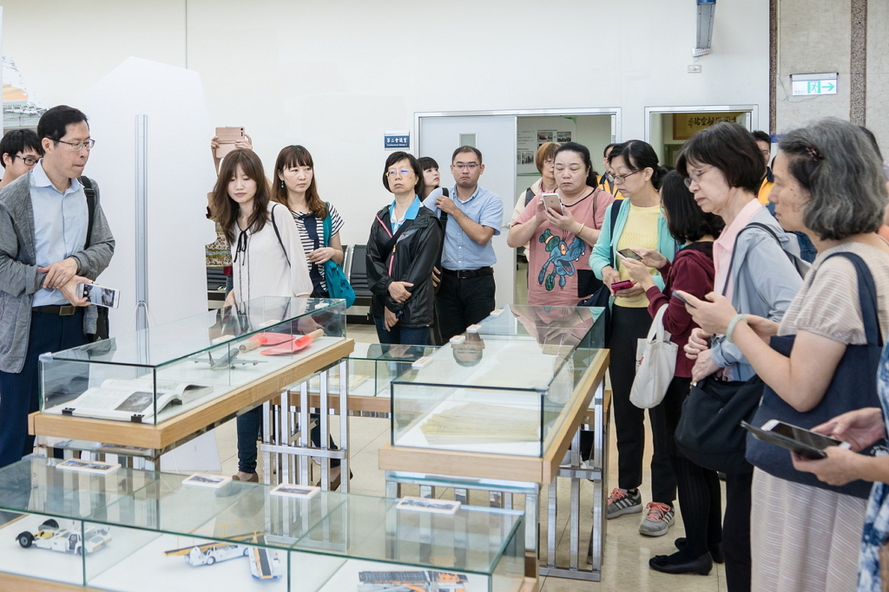
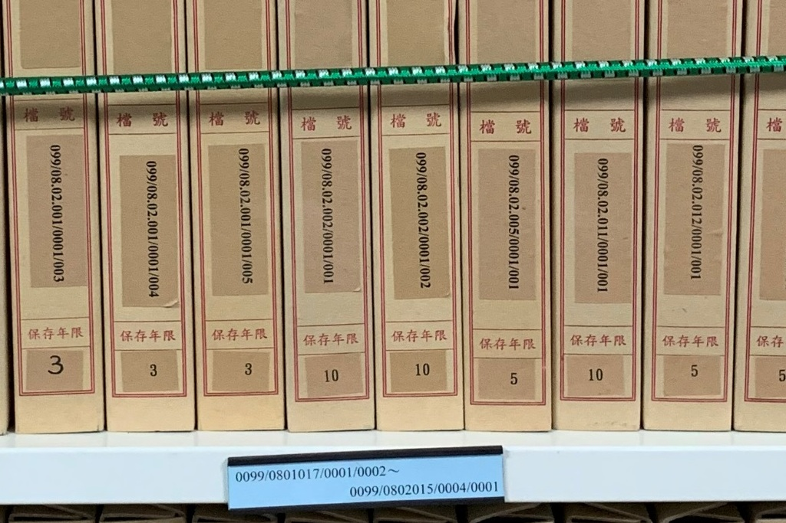
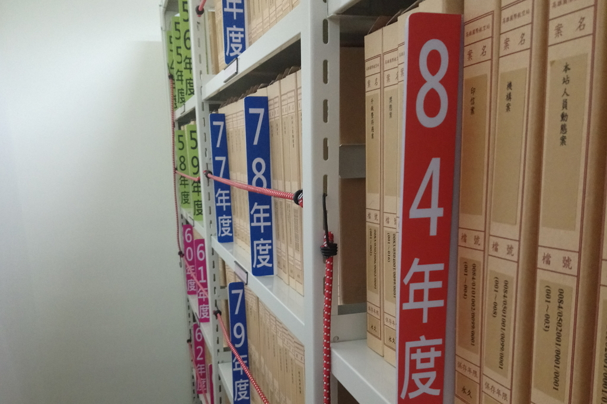
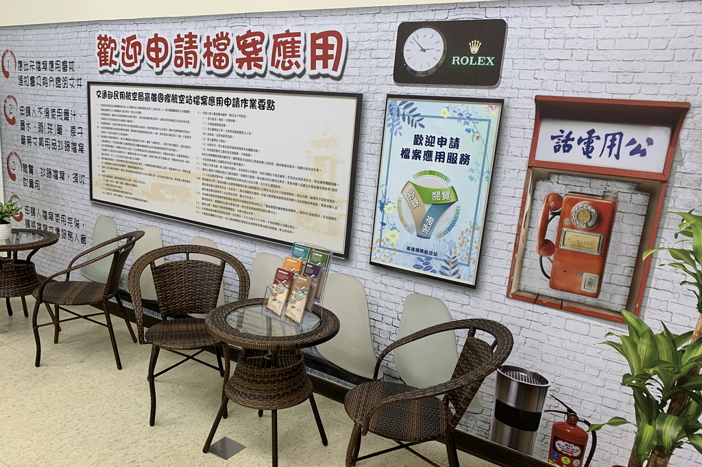

CP-內容頁（說明+照片）


交通部民用航空局高雄國際航空站為第17屆機關檔案管理金檔獎獲獎機關，於「檔案管理規劃與培訓」、「檔案立案編目」、「檔案鑑定與清理」等3項檢核項目榮獲特優，列為本局標竿學習對象，藉以精進檔案管理同仁知能。
透過實地參訪學習，在人力與預算成本考量下，效法標竿機關作為，列為本局檔案管理精進方向之參考：
1製作檔號排序卡
本局檔案庫房僅有部分檔案架有相關註記，持續且全面製作檔號排序小卡片放置於檔案架各連明顯處，可縮短檔管人員調閱檔案時間。
2製作檔案年度標示卡，製作檔案年度標示卡製作檔案年度標示卡製作檔案年度標示卡製作檔案年度標示卡
本局檔案庫房尚未有檔案年度標示卡，針對檔案量較少之檔案類別，如早期檔案或永久檔案製作檔案年度標示卡，以利不同年度檔案之區別且更為明確。
交通部民用航空局 高雄國際航空站之合影照

檔案展覽區參訪照片

直式圖檔測試

檔號排序卡

檔案年度標示卡（測試過長的文字，測試過長的文字，測試過長的文字，測試過長的文字，測試過長的文字，測試過長的文字，測試過長的文字，）

檔案應用處所